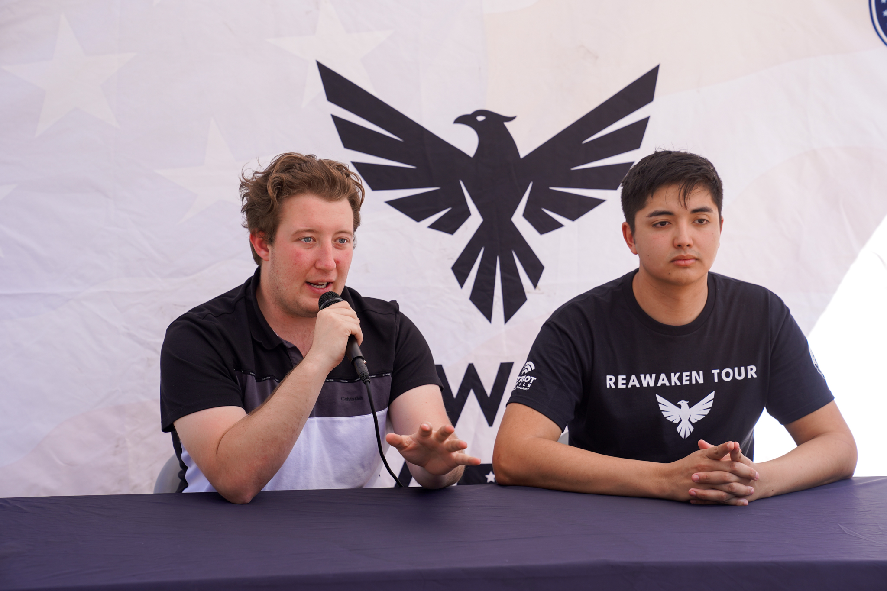
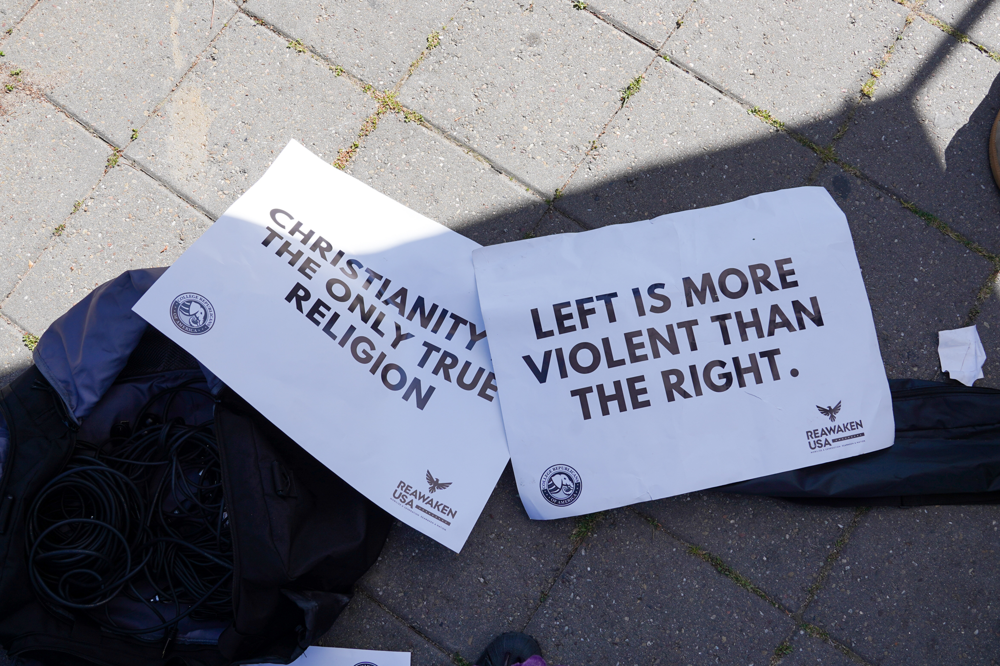

_Mina Lavapies_staff.jpg)
Two tents labeled “Reawaken USA” have gathered a small crowd on Sproul Plaza. There are two cameras set up, one facing the tent and one at a chair just outside of it. A high schooler sits in the far chair, debating gender-affirming care against two conservative commentators. Rather than national figures, the Republican debaters are UC Berkeley students: Miguel Muniz and Martin Bertao.
Berkeley is Republicans’ white whale. Despite, or perhaps because of, the city’s reputation as a radically liberal stronghold, Republicans just can’t stay away. Conservative provocateurs have insisted on making Berkeley a destination on their tours, even though they are inevitably followed by vitriol and protests. Milo Yiannopoulos spoke on campus in 2017, which brought a small riot; he was followed by Charlie Kirk in 2022. Most recently, UC Berkeley served as Turning Point USA’s final stop in its national tour after Kirk’s assassination last fall.
The November event and cacophony of protests and police action outside of it fueled a conservative content cycle, sparking investigations from the U.S. Department of Justice and FBI, a deluge of Fox News coverage and more than a million views across social media platforms.
The Berkeley Republicans are a mixed bag.
John Paul Leon, president of TPUSA’s Berkeley chapter, gave a nearly six-minute interview on Fox and Friends the day after the protests. He has visited Mar-a-Lago, debated liberal commentator Destiny and — along with other Berkeley Republicans — has appeared on Jubilee series Surrounded.
Figures such as Leon undoubtedly benefit from their backdrop and Berkeley’s history, allowing campus conservatives to uniquely utilize the Republican content machine.
Bertao is a relatively standard MAGA Republican. A member of the College Republicans since his freshman year and current president of College Republicans of America, Bertao describes “2020 era cancel culture” as formative to his politics. “With Biden getting elected,” he recalled, “the culture didn’t really allow for real conservatism.”
Muniz, a campus junior and president of California College Republicans, has amassed more than 12,000 followers on Instagram for conservative content. A child of Mexican immigrants, he said the party generally is “grateful to see that people from my background can come to share their godly values.”
At the booth, the two were joined by Reawaken USA founder James Owen, a faith-based influencer. Rather than political motivation, Owen said his priority is not to register more Republican voters, but instead to spread the gospel.
Despite taking advantage of the media cycle in similar ways, campus conservatives have their ideological differences.
Bertao’s recent appointment of conservative commentator Kai Schwemmer as political director of the College Republicans of America sparked some controversy among the Berkeley College Republicans. Bertao described him as an “American Nationalist.” Previously, he appeared on stream with white supremacist Nick Fuentes. In December, Schwemmer said the CEOs of Boeing and Raytheon are Jewish Zionists favoring Israeli interests over American interests, before apologizing. Neither CEO is Jewish.
His pick was highly divisive. A club meeting after the appointment opened with a discussion on Schwemmer, with some expressing frustration and others calling on members to trust Bertao.
Despite such disagreements, Berkeley’s conservatives consider themselves to be part of a broad tent.
“There’s so much diversity of opinion at UC Berkeley, and it’s not very cliquey, you know, like the libertarians hang out with the libertarians, the neocons hang out with the neocons,” Muniz said.

Muniz, Bertao and Owen will be going on a nationwide tour with Reawaken USA, and are already traveling across California and Utah, with imminent plans to expand to more campuses.
Owen was quick to mention the organization’s partner, Patriot Mobile, a “Christian conservative mobile carrier service” that is backed by dozens of conservative groups, including Turning Point USA, CPAC and Moms for Liberty.
“We aligned first with Patriot Mobile,” Owen said, “They don’t only connect people to each other. They fuel organizations like mine to connect people to Christ.”
These organizations fuel a content machine that feeds on debate. From Milo Yiannopoulos to Charlie Kirk, debates have been a staple of the youth Republican movement.
“We’re trying to promote open dialogue, (and) get content to show people how debates go, and challenge their ideas and hopefully lead people towards the truth,” Bertao said.
Such debates work on two levels: the moment of the debate itself and its digital afterlife.
On the ground, conservatives engage in extensive debates that typically end in mutual acceptance. While minds were rarely changed on Sproul, most people who actually spoke with Berkeley’s Republicans seemed to appreciate this process.
The format of these traditional debates allows and encourages conservatives to say anything under the guise of free speech, and be celebrated as encouraging dialogue by the wider conservative community.
Online, however, the 30-minute conversation is rarely ever seen. It is repackaged into clips posted online, all of which make conservatives look superior to the irrational liberal. Republicans are most viral when they are harassed, or when debate devolves into their opponent having an emotional or physical outburst. Reawaken USA has not posted a clip where their opponent seems to make a reasonable point, doing away with the pretense that they care about a free, open discourse.
Because free speech is systematically protected, they have assurance that when someone reacts to their harmful speech in a threatening way, they have the security of law enforcement. These emotional, and often illegal, responses are where they get most of their content — including arrests and detainments. Speaking about Reawaken’s first trip to Berkeley, Owen seemed to brag about this.
“We got six students arrested,” Owen said.
Reawaken USA’s Instagram account’s longest clip is 1 minute and 45 seconds, and the most viral clips feature debaters getting harassed outside the confines of debate. The one whole debate posted on its YouTube channel has less than 300 views.
The viral clips foster the conservative notion of a violent left, and relish when “justice” is served to the liberal instigator.
One recent video, crossposted across five conservative accounts including Reawaken, shows Muniz confronting a “leftist” who allegedly assaulted him while he was “trying to have a peaceful debate,” according to an AI voiceover. It shows Muniz flagging down UCPD to gather statements.
The planning for these debates, too, seems to prioritize clips over lengthy debates. At a joint TPUSA and College Republican meeting, an attendee advised conservatives debating liberals to cycle between topics until they find the hypothetical liberal opponent’s weakness and attack it.
Owen described changing debate topics to “invite … actual conversation.” While they previously debated “transgender people are mentally ill,” they now debate “Christianity is better than transgenderism.”

“It was to facilitate conversation, to get people emotionally charged enough to come up and talk to us. Now … it can evoke emotional charge, but it’s in a way that also can invite conversation about Christ and also actual conversation about what they believe,” Owen said.
The Turning Point event last fall followed the same formula. While not a debate, it served the same two-level purpose. Without context, it was a place for Republicans to share their speech and opinions. And yet, the clips from the event — the part meant to be publicized — looked strikingly similar to Reawaken USA’s posts. From X accounts such as “LibsofTiktok” to Fox News to the DOJ’s investigation into Berkeley, what took precedence online was moments of leftist irrationality, law enforcement protecting conservative speech and protesters getting arrested.
It is a form of content passed down the party, from as high as the presidency.
“Trump’s broad policy of allowing and promoting free speech within the party has really enabled people to speak their minds, to have those honest and open debates about ideology,” Bertao said. “Trump (came) after the left for what had been years of cancellation and woke rhetoric. Coming after them emboldened us to do the same.”